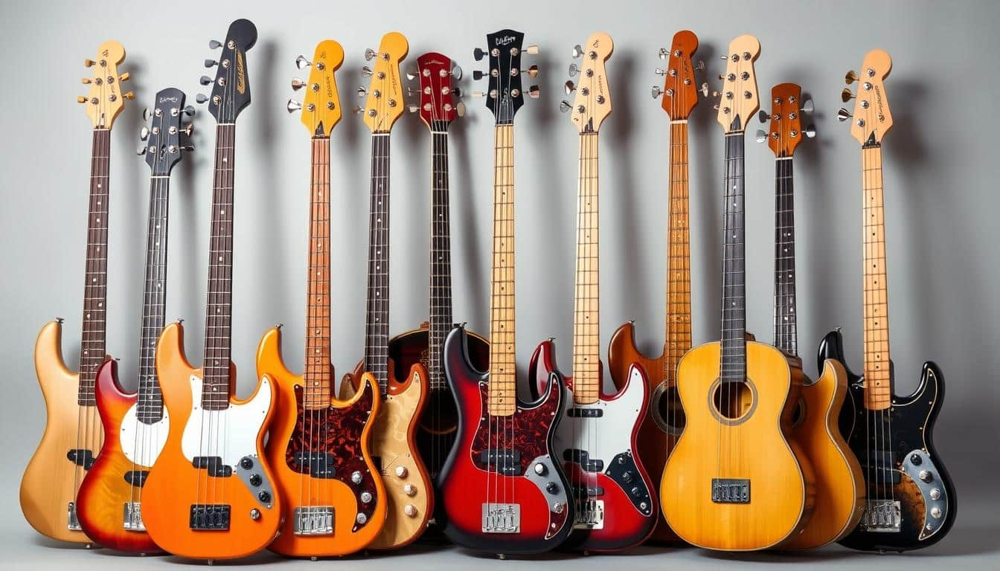
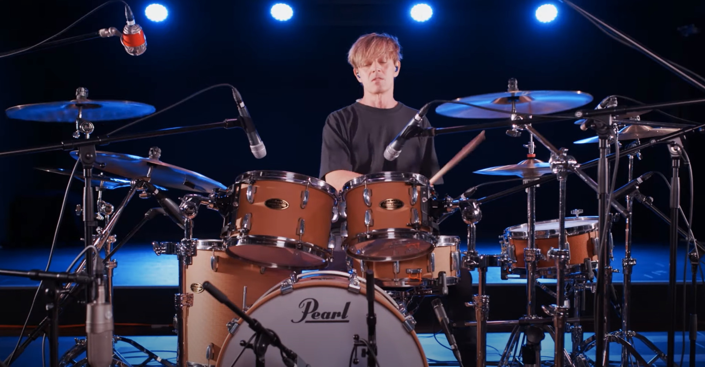

Gitarre

Die Gitarre ist eines der beliebtesten Instrumente weltweit.
Klavier
Das Klavier ist ein vielseitiges Instrument mit großer Ausdruckskraft.
Schlagzeug

Das Schlagzeug sorgt für den richtigen Beat und satten Bass.

Die Gitarre ist eines der beliebtesten Instrumente weltweit.
Das Klavier ist ein vielseitiges Instrument mit großer Ausdruckskraft.

Das Schlagzeug sorgt für den richtigen Beat und satten Bass.